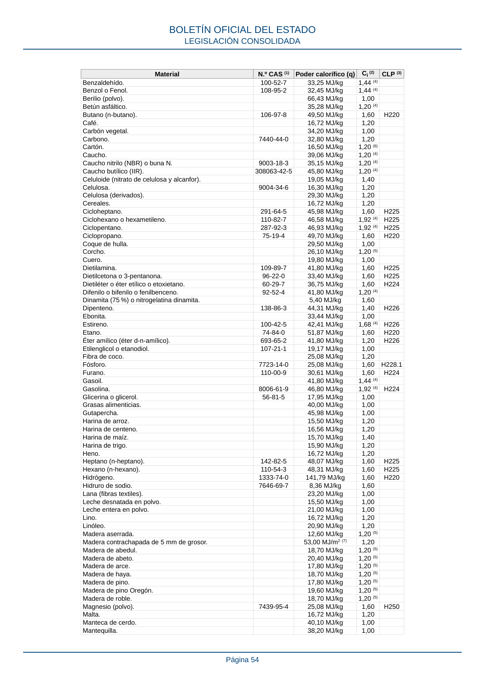

RSCIEI · Página 54 · versión 2025-04-10
SHA256: 85aa0af25d51e5b58d8975a4eefbf76d3f57a8933445cfe814ae9c4818a2e3e7 · página física 54 de 108 · métodos de encabezado
solo si están cotejados.
Formatos: Markdown · JSON de bloques · PDF p. 54 · imagen PNG
Material N.º CAS (1) Poder calorífico (q) Ci (2) CLP (3) Benzaldehído. 100-52-7 33,25 MJ/kg 1,44 (4) Benzol o Fenol. 108-95-2 32,45 MJ/kg 1,44 (4) Berilio (polvo). 66,43 MJ/kg 1,00 Betún asfáltico. 35,28 MJ/kg 1,20 (4) Butano (n-butano). 106-97-8 49,50 MJ/kg 1,60 H220 Café. 16,72 MJ/kg 1,20 Carbón vegetal. 34,20 MJ/kg 1,00 Carbono. 7440-44-0 32,80 MJ/kg 1,20 Cartón. 16,50 MJ/kg 1,20 (6) Caucho. 39,06 MJ/kg 1,20 (4) Caucho nitrilo (NBR) o buna N. 9003-18-3 35,15 MJ/kg 1,20 (4) Caucho butílico (IIR). 308063-42-5 45,80 MJ/kg 1,20 (4) Celuloide (nitrato de celulosa y alcanfor). 19,05 MJ/kg 1,40 Celulosa. 9004-34-6 16,30 MJ/kg 1,20 Celulosa (derivados). 29,30 MJ/kg 1,20 Cereales. 16,72 MJ/kg 1,20 Cicloheptano. 291-64-5 45,98 MJ/kg 1,60 H225 Ciclohexano o hexametileno. 110-82-7 46,58 MJ/kg 1,92 (4) H225 Ciclopentano. 287-92-3 46,93 MJ/kg 1,92 (4) H225 Ciclopropano. 75-19-4 49,70 MJ/kg 1,60 H220 Coque de hulla. 29,50 MJ/kg 1,00 Corcho. 26,10 MJ/kg 1,20 (5) Cuero. 19,80 MJ/kg 1,00 Dietilamina. 109-89-7 41,80 MJ/kg 1,60 H225 Dietilcetona o 3-pentanona. 96-22-0 33,40 MJ/kg 1,60 H225 Dietiléter o éter etílico o etoxietano. 60-29-7 36,75 MJ/kg 1,60 H224 Difenilo o bifenilo o fenilbenceno. 92-52-4 41,80 MJ/kg 1,20 (4) Dinamita (75 %) o nitrogelatina dinamita. 5,40 MJ/kg 1,60 Dipenteno. 138-86-3 44,31 MJ/kg 1,40 H226 Ebonita. 33,44 MJ/kg 1,00 Estireno. 100-42-5 42,41 MJ/kg 1,68 (4) H226 Etano. 74-84-0 51,87 MJ/kg 1,60 H220 Éter amílico (éter d-n-amílico). 693-65-2 41,80 MJ/kg 1,20 H226 Etilenglicol o etanodiol. 107-21-1 19,17 MJ/kg 1,00 Fibra de coco. 25,08 MJ/kg 1,20 Fósforo. 7723-14-0 25,08 MJ/kg 1,60 H228.1 Furano. 110-00-9 30,61 MJ/kg 1,60 H224 Gasoil. 41,80 MJ/kg 1,44 (4) Gasolina. 8006-61-9 46,80 MJ/kg 1,92 (4) H224 Glicerina o glicerol. 56-81-5 17,95 MJ/kg 1,00 Grasas alimenticias. 40,00 MJ/kg 1,00 Gutapercha. 45,98 MJ/kg 1,00 Harina de arroz. 15,50 MJ/kg 1,20 Harina de centeno. 16,56 MJ/kg 1,20 Harina de maíz. 15,70 MJ/kg 1,40 Harina de trigo. 15,90 MJ/kg 1,20 Heno. 16,72 MJ/kg 1,20 Heptano (n-heptano). 142-82-5 48,07 MJ/kg 1,60 H225 Hexano (n-hexano). 110-54-3 48,31 MJ/kg 1,60 H225 Hidrógeno. 1333-74-0 141,79 MJ/kg 1,60 H220 Hidruro de sodio. 7646-69-7 8,36 MJ/kg 1,60 Lana (fibras textiles). 23,20 MJ/kg 1,00 Leche desnatada en polvo. 15,50 MJ/kg 1,00 Leche entera en polvo. 21,00 MJ/kg 1,00 Lino. 16,72 MJ/kg 1,20 Linóleo. 20,90 MJ/kg 1,20 Madera aserrada. 12,60 MJ/kg 1,20 (5) Madera contrachapada de 5 mm de grosor. 53,00 MJ/m2 (7) 1,20 Madera de abedul. 18,70 MJ/kg 1,20 (5) Madera de abeto. 20,40 MJ/kg 1,20 (5) Madera de arce. 17,80 MJ/kg 1,20 (5) Madera de haya. 18,70 MJ/kg 1,20 (5) Madera de pino. 17,80 MJ/kg 1,20 (5) Madera de pino Oregón. 19,60 MJ/kg 1,20 (5) Madera de roble. 18,70 MJ/kg 1,20 (5) Magnesio (polvo). 7439-95-4 25,08 MJ/kg 1,60 H250 Malta. 16,72 MJ/kg 1,20 Manteca de cerdo. 40,10 MJ/kg 1,00 Mantequilla. 38,20 MJ/kg 1,00 BOLETÍN OFICIAL DEL ESTADO LEGISLACIÓN CONSOLIDADA Página 54
